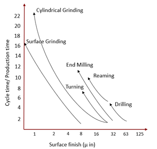
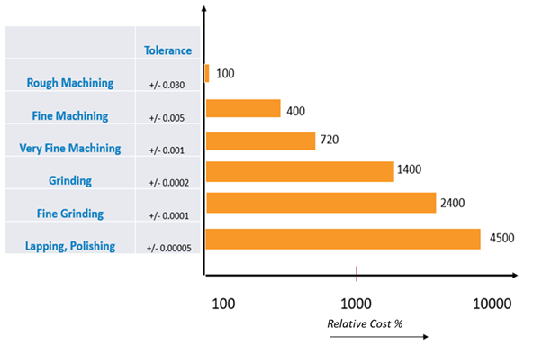
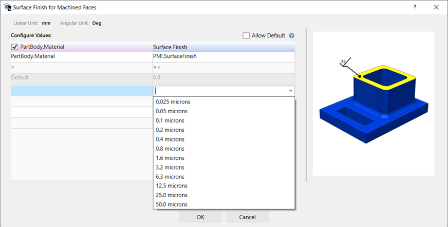
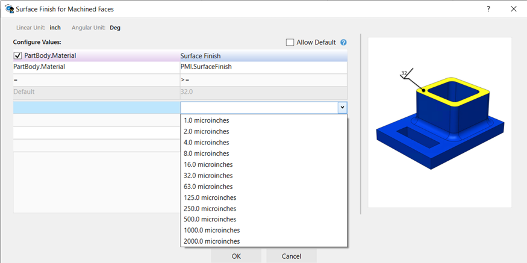
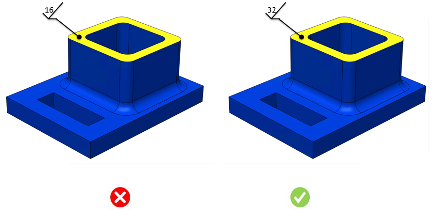

パーツの材料に基づいて、本ルールは厳しい（細かい）表面粗さ（仕上げ）値をチェックします。
表面粗さ（仕上げ）値を付与する際、設計者は材料グレード、社内設備（工作機械）の加工能力、そして熟練作業者の確保状況を考慮する必要があります。より低い表面粗さ値は、必要な場合にのみ指定すべきです。これは、"Ra" の値が小さいほど、より多くの加工工数／加工工程および品質管理が必要になるためです。
図1は、従来の製造プロセスにおける表面粗さに対する相対サイクルタイムを示します。

図1

図2
設計者は、パーツの材料、実際のパーツ機能、パーツの動き（運動）、外観（意匠）、設備（工作機械）の能力、そして全体の加工コスト制約を考慮すべきです。不必要に厳しい表面粗さ値は、特に量産において、パーツコストを指数関数的に増加させます。
本ルールでは、材料に基づいて表面粗さ（仕上げ）値を構成できます。ユーザーは、以下の画像に示すように、許容される標準の表面粗さ値をミクロンおよびマイクロインチ単位で構成できます。


ルールUI内の材料リストは、Materials Database から読み込まれます。ユーザーは、材料およびそれに関連付けられた値を構成できます。材料グループ内では、材料グレードはアルファベット順に並べ替えられます。材料グループが選択された場合、DFMPro は材料グループ全体で一貫した比率を維持したまま解析を実行します。
